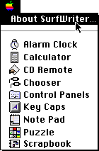
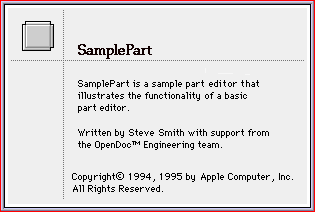
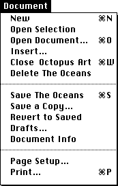
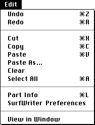
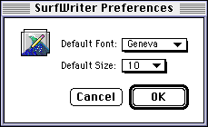
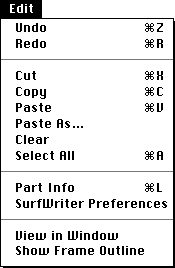
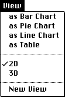
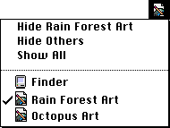
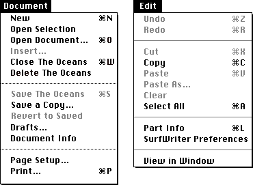

Menus
This section describes the menu items that your part editor is responsible for displaying when it is active:The document shell provides the basic menu bar when a user opens a document. When your part becomes active, your part editor takes control of the menu bar, displaying your part editor's menus, which include items that relate to manipulating your part's content. For example, when a graphics part is active, the menu bar might contain the Document menu, the Edit menu, a Tools menu, a Brush menu, and an Options menu.
- Apple menu
- Document menu
- Edit menu
- View menu
- Application menu
For specific information on designing menus and menu items, see the chapter "Menus" in Macintosh Human Interface Guidelines, which discusses the menu bar, menu behavior, menu elements, standard characters and text styles in menus, different types of menus, and standard menu items for the Mac OS platform.
Apple Menu
The Apple menu contains items that the user accesses frequently or that the user might want to access without having to go to the Finder.Figure 12-25 About Editor menu item
- About Editor. When your part editor is active, it should include the item About Editor in the Apple menu. Change the first menu item in the Apple menu to contain your part editor's name, for example, "About SurfDraw." Figure 12-25 shows an example of this menu item for the SurfWriter text part editor.

When the user chooses this menu item, display a dialog box that contains information identifying your part editor. For example, your dialog box may includeYou can also include other information that you consider essential to the user. Figure 12-26 shows an example of an About dialog box.
- the name of your part editor
- its version number
- a copyright notice
- other information your company requires
- status information you believe is useful for the user to know, such as how to contact your company for customer support
Figure 12-26 An About dialog box

Document Menu
Items in the Document menu generally apply to the document as a whole. The Document menu provides commands that pertain to housekeeping tasks for documents. You shouldn't alter the Document menu except to add items that pertain to the entire document when your part is active or is the root part. If you add commands to the Document menu, add them after the printing items, and--to avoid conflicts with other parts--do not create keyboard equivalents for them. Figure 12-27 shows an example of the Document menu.
Note that there is no Quit command in the Document menu. In the context of a document-centered environment, it doesn't make sense to quit an application. Instead, users close documents when they finish working with them.The OpenDoc document shell handles most items in the document menu; see "The Document Shell and the Document Menu". This section discusses only visual aspects of the Document menu, including rules for enabling its items and keyboard equivalents for its commands.
- New. Handled by the document shell. The Command-N combination is reserved as a keyboard equivalent for the New command in the Document menu. It shouldn't be used for any other purpose.
- Open Selection. The user chooses this command to open the current selection into a part window. When your part is active, enable this item if the current selection includes one or more embedded parts that your part editor can open.
Handle this item as described in "Open Selection". After opening the part window, your part can display a background-selection appearance around the frame (in your source document) that has been opened.
- Open Document. Handled by the document shell. The Command-O combination is reserved as a keyboard equivalent for the Open Document command in the Document menu. It shouldn't be used for any other purpose.
- Insert. The user chooses this command to select a document through the standard file dialog box and embed or incorporate it at the location of the current selection/insertion point in the active part.
Handle this item as described in the section "Insert".
- Close Window. Handled by the document shell. The name of the item includes the title of the active window. For example, if a part window with the title "Octopus Art" is frontmost, this menu item is "Close Octopus Art".
The Command-W combination is reserved as a keyboard equivalent for the Close command in the Document menu. It shouldn't be used for any other purpose.
The Command-Option-W combination--or holding down the Command and Option keys while selecting Close from the Document menu--serves as a Close Document command. It shouldn't be used for any other purpose.
- Delete Document. Handled by the document shell. The name of the item includes the name of the current document. For example, if the currently open document is named "The Oceans", this menu item is "Delete The Oceans".
- Save Document, Save a Copy, and Revert to Saved. Handled by the document shell. Your part editor does not handle these commands; saving always applies to an entire document, never to an individual part. (The name of the Save Document item includes the name of the current document.)
Most documents use a manual save model, meaning that OpenDoc saves the content of the document--and parts write their contents to storage--only when the user issues a Save or Save a Copy command. Some parts, however, such as control panels, may use an automatic save model, immediately writing all user changes to storage without waiting for a Save command. Such changes are not permanent, however, unless and until a save is performed.
Some kinds of parts may want to save units smaller than an entire part. For example, a part that represents a database may allow the user to save changes to individual records. If your part or a portion of your part may need to be saved independently from the document as a whole, then you should provide a Save Unit command in one of your part editor's menus. In any case, changes your part editor writes to its storage unit are not permanently recorded in persistent storage until a save of the entire document is performed.
Revert to Saved discards all work since the last explicit save action, which may or may not have been the execution of the Save command (depending on whether your part has saved its own data, either automatically or with a custom Save command).
- Drafts. Handled by the document shell.
- Document Info. The user chooses this command to display a dialog box presenting part-specific properties that the user can change. These Info properties relate to the document as a whole, or to its root part. Figure 11-14 shows an example of the Document Info dialog box.
In addition to displaying information that describes the document, the Document Info dialog box allows the user to change the part kind or part editor of the root part, bundle or unbundle the root part, change the document to (or from) a stationery pad, and show or hide link borders.
- Page Setup. The Page Setup command lets the user specify printing parameters such as the paper size and printing orientation. The editor of the root part can provide other printing options as appropriate. The root part should save any parameters the user sets in the Page Setup dialog box with the document. Figure 6-1 shows a typical Page Setup dialog box.
- Print. The Print command lets the user specify various parameters, such as print quality and number of copies, and then prints the frontmost window. Because the parameters apply only to the current printing operation, the root part shouldn't save them with the document. Figure 6-2 shows a typical Print dialog box.
If the user has not selected a printer, the root part should display a dialog box when the user chooses the Print command. This dialog box should alert the user of the situation and direct the user to the Chooser (or other appropriate location) to select a printer.
If the user selects a document in the Finder and then chooses Print, the document opens, prints its content, and then closes.
In general, the printed version of your part should be a faithful representation of its screen appearance in its document. Therefore, if only a portion of your part is displayed in its frame, you usually print only the visible portion. Likewise, if your part displays scroll bars, you typically print them, unless you are the root part.
If you find it necessary to add items to the Print dialog box, do so at the bottom. For more information on printing, see Inside Macintosh: Imaging With QuickDraw and Inside Macintosh: QuickDraw GX Printing.
The Command-P combination is reserved as a keyboard equivalent for the Print command in the Document menu. It shouldn't be used for any other purpose.
Edit Menu
The Edit menu provides commands that allow users to change the content of their documents. It also provides commands that allow users to copy and move data via the clipboard, get information about parts, and access additional tools. All part editors should support all the Edit menu commands. Part viewers should support the Copy and Select All commands. These commands provide standard data-manipulation abilities, including text editing, that need to be available in modal dialog boxes, even though your part editor may not handle these events directly. Figure 12-28 shows an example of a standard Edit menu.Figure 12-28 A standard Edit menu

You can add other commands to this menu if they're essential to your part and involve changing content. Place them in the category in which they belong or at the end of the menu if the commands are of a different category. For example, a Select Special command would appear after Select All, whereas a Find command would appear at the end of the menu below a separator line.This section notes visual aspects of the Edit menu and the execution of its commands, including enabling rules and command equivalents. For a more complete description of the Edit menu and the handling of its commands, see the section "The Edit Menu". For general Mac OS interface guidelines relating to the clipboard and other Edit menu items, see Macintosh Human Interface Guidelines.
Figure 12-29 A preferences dialog box
- Undo. The Undo command reverses the effect of the user's most recent undoable operation and restores all parts to their states before that action. Your part editor should respond to this command as described in the section "Undoing an Action". Part editors should support multiple levels of undo.
The Command-Z combination is reserved as a keyboard equivalent for the Undo command in the Edit menu. It shouldn't be used for any other purpose.
- Redo. The Redo command reverses the effects of the last undo operation, restoring all parts to their previous states. Your part editor should respond to this command as described in the section "Redoing an Action".
OpenDoc enables this item only if the last undoable user action was choosing Undo. OpenDoc supports multiple levels of redo actions, subject to that restriction. If the user chooses the Undo command three times in sequence, the user can then choose the Redo command up to three times in sequence, but not four.
The Command-R combination is reserved as a keyboard equivalent for the Redo command in the Edit menu. It shouldn't be used for any other purpose.
- Cut. The Cut command removes the current selection from the active part and places the data on the clipboard. Users employ the Cut command to delete the current selection or to move it. Your part editor should respond to this command as described in the section "Copying or Cutting to the Clipboard".
Store the cut selection on the clipboard, replacing its previous contents. Often it makes sense to show where a selection existed after a cut operation. The visual indicators vary according to the kind of containing part. For example, a text-editing part would display a blinking insertion point at the spot where the text was cut. In an array, the user would see an empty but highlighted cell. Editors for some kinds of data, such as graphics, don't have the concept of an insertion point; in this case, the absence of the object would be the indicator. If the user chooses Paste immediately after choosing Cut, restore the document to its state just before the cut operation.
The Command-X combination is reserved as a keyboard equivalent for the Cut command in the Edit menu. It shouldn't be used for any other purpose.
- Copy. The Copy command places a duplicate of the current selection onto the clipboard. Your part editor should respond to this command as described in the section "Copying or Cutting to the Clipboard".
Your part editor puts a duplicate of the selected information on the clipboard but leaves the selection in the document. Users employ the Copy command in conjunction with the Paste command to insert duplicate data in another location.
The Command-C combination is reserved as a keyboard equivalent for the Copy command in the Edit menu. It shouldn't be used for any other purpose.
- Paste. The Paste command inserts the contents of the clipboard at the insertion point or default insertion location in the active part. Your part editor should respond to this command as described in the section "Pasting From the Clipboard". The pasted content replaces any current selection and may be either incorporated or embedded.
The user can choose the Paste command several times in a row to insert multiple copies of the clipboard content. After a paste operation, you can either select the pasted object or add an insertion point immediately following the pasted content, depending on what you think the user intends to do next. If the user is likely to alter the pasted content (for example, by changing its proportions or moving it), then you should leave it selected. If the user is likely to add to the pasted content (for example, by typing more text), then place an insertion point immediately following the pasted content. In either case, leave the contents of the clipboard unchanged.
The Command-V combination is reserved as a keyboard equivalent for the Paste command in the Edit menu. It shouldn't be used for any other purpose.
- Paste As. The Paste As command displays a dialog box shown in Figure 8-3.
- Clear. The Clear command deletes the current selection. Unlike Cut and Copy, the Clear command does not put the selection on the clipboard. The clipboard is unchanged, and your part editor displays the same feedback as it would after a cut operation.
Pressing the Delete (Backspace) key or the Clear key has the same effect as choosing the Clear command from the Edit menu. (The Backspace key and the Clear key do not appear on all keyboards.)
- Select All. The Select All command highlights all content in the active part. It selects all intrinsic content of the active part and all of its embedded parts. If the root part of the root window is active, the whole document is selected. This command is useful if a user wants to copy or reformat an entire part. For instance, a user might choose Select All to copy and paste the contents of a part into another part.
The Command-A combination is reserved as a keyboard equivalent for the Select All command in the Edit menu. It shouldn't be used for any other purpose.
- Selection Info. The Selection Info command displays a dialog box that provides information about the selected part and may allow the user to alter certain Info properties of the part. When the selection is a link, the command name changes to Link Info.
The active part is responsible for enabling this command and setting its name. If the selection consists of intrinsic content, your part editor can name this command ContentKind Info and use it to display the Info properties of that content. For example, you could have a menu item named Row Info or Graphic Info. If you don't display property information for your intrinsic content, disable this menu item when only intrinsic content is selected. Figure 6-3 shows a Part Info dialog box.
Only one part's Info properties may be edited at a time. If there is no selection, or if the selection consists of multiple embedded parts only, the active part should disable this command.
The Settings button in the Part Info dialog box is one way that a user can access a part editor's Settings dialog box. See "Displaying Part Information and Settings" for information on part settings.
When a user selects a link, the active part editor changes the Part Info command to Link Info. The user chooses this command to get the informa-
tion dialog box that contains property information for the link. The part containing the link source is responsible for performing the actions the user specified with this dialog box. Depending on whether the user selects a link source or a link destination, display the appropriate dialog box. Figure 6-4The Command-L combination is reserved as a keyboard equivalent for the Selection Info command in the Edit menu. It shouldn't be used for any other purpose.
- Editor Preferences. The Editor Preferences command displays a preferences dialog box that presents any part-editor preferences you supply. When your part is active, display the name of your part editor in the menu item name.
Preferences control the behavior of the editor used to change a particular part. They apply to the behavior of the editor, not its content. You should store any user preferences in a file that your editor creates in the Preferences folder. (Appendix C, "Installing OpenDoc Software and Parts," describes the location of the Preferences folder.)
Typically, Preferences dialog boxes are implemented as movable modal dialog boxes. For guidelines for creating these and other types of dialog boxes, see the chapter "Dialog Boxes" in Macintosh Human Interface Guidelines. Your part editor determines which preferences to provide for the user. One example of a preference is the color palette for use when a painting part is active. Some choices might be the Apple System Palette, palettes based on different bit depths of colors available, and custom palettes that your part editor provides. Figure 12-29 shows a sample of a Preferences dialog box from a painting part.

This command allows users to reposition the content that is visible in the part's frame. If all of the part's content is visible in the frame in the source document, disable the Show Frame Outline command. Disable this command also if the user has opened the part window from an icon view type, because the changes made won't be reflected in the icon view. This command creates a mode in which the user can only reposition the visible content or exit the mode. Figure 12-30 shows the Edit menu with the Show Frame Outline command added and enabled.
- View in Window. The View in Window command opens the active part in a separate part window so that the user can edit the part's content as a whole. This command is always available, even if the active part is already open in its own part window. When the user chooses this command and a part is already viewed in a part window in the background, that window comes to the front of the screen. Figure 13-13 shows an example of a part viewed in a window.
If the active part is in icon view, then the user can double-click the icon to achieve the same effect as View in Window.
- Show Frame Outline. You add the Show Frame Outline command to the Edit menu when all of the following conditions apply:
- Your part has a frame view type, and the user opens that source frame into a part window.
- The part window is active.
- The part window displays more part content than is visible in the source frame.
Figure 12-30 The Show Frame Outline command in the Edit menu

When the user chooses Show Frame Outline from the Edit menu, display (in the part window) a 1-pixel-wide black-and-white border around the content currently visible in your part's frame (in the source document). See the section "Repositioning Content in a Frame" for more informa-
tion and illustrations.When you display the frame outline, change the name of the menu command to Hide Frame Outline until the user chooses it again to hide the outline.
View Menu
If your part editor allows different views of part content in a frame or allows multiple simultaneous views, implement a View menu. This menu should contain commands that allow the user to manipulate the view of the frame. For example, a 3D part may allow a top view, a side view, a wireframe view, and a fully rendered view. These choices might be combined: for example, a side view of the data rendered in wireframe. If you support this menu, include it after the Edit menu in the menu bar. Figure 12-31 shows an example of a View menu.
If your part editor allows the user to open a part into more than one window with separate views, then include an additional command, New View, at the end of the View menu. The New View command is similar to the View in Window command except that it creates additional views. As new views are created, you could append them to the bottom of the View menu rather than using a Windows menu. For more information on the Windows menu, see "Should You Have a Windows Menu?"Application Menu
On the Mac OS platform, the Application menu is the farthest right on the menu bar. It lists all OpenDoc documents, non-OpenDoc applications, and desk accessories that are currently open; see Figure 12-32. The title of the Application menu consists of the icon of the currently active OpenDoc document (or conventional application or desk accessory).
When the active process contains an OpenDoc document, the root part of that document is responsible for displaying its part icon as the Application menu title.Should You Have a Windows Menu?
In OpenDoc, all open documents are listed in the Application menu, which allows users to switch between windows much as they switch between applications in a non-OpenDoc environment. Therefore, you shouldn't necessarily implement a Windows menu to allow users to move between documents since this feature already exists.However, there may be other compelling reasons to implement a Windows menu in your part editor. For example, if you offer window-management services, such as tiling windows or stacking windows, then it would be appropriate to implement a Windows menu to provide these commands.
Part Viewers, Read-Only Documents, and Menus
If your part is being displayed by a part viewer instead of a part editor, your part viewer must disable several OpenDoc menu items whenever it is active. In the Document menu, it must disable the Insert command. In the Edit menu, it must disable the Cut, Paste, Paste As, and Clear commands.Because the user has read-only access to your part, your part viewer should probably also remove any other content-editing commands in your part's menus. If you make any editing commands available and enabled in the menu bar, make sure that you notify the user that any changes made will not be saved.
These rules also apply--even to your fully functional part editor--whenever a read-only document is open. This situation occurs when a user opens a document from a read-only medium (such as a CD-ROM or a file server), a saved draft of a document, or a viewer version of a part or document. Figure 12-33 shows an example of disabled commands in the menu bar of a read-only part.
Figure 12-33 Menus of a part viewer
